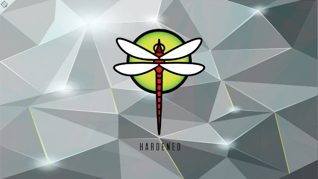
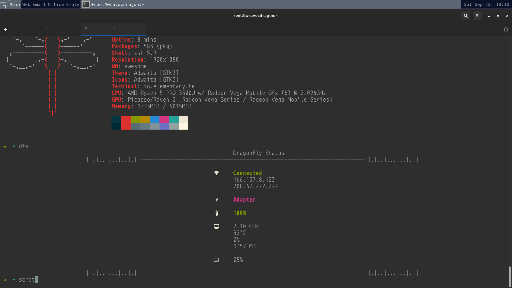

This security script utilizes years of security contributions by the entire BSD community across all spectra and decades of Professional Security Experience to implement what would take an experienced operator an hour or so to harden their system can be done in seconds with backups, logs, syntax checking, and Zenbleed workaround.
As a special edition versus the other BSD Hardening Editions {FreeBSD, GhostBSD} this repository includes a complete developer workstation installation and configuration for a Lenovo Thinkpad T495, the most compatible and latest Thinkpad. Includes a WiFI configurator, installs all hardware drivers, and comes with a customized desktop environment including a network hardened Firefox, additionally replete with all the tools you'll need to make great software on the fastest BSD. It is built to be easy on the eyes and easy on the hands and everything was chosen to be fast, fast, fast.
See the docs folder manual for the list of everything you get.

rc.conf,
sysctl.conf, login.conf, and
loader.conf on first runumask to 27 (USER all, GROUP rx,
OTHER none)other write permissions from key system
files and folderscron and
at/var/log/messages and Script
Logging to /var/log/harden-dragonflybsd.logFull Changelog
dfs alias to dfs.shmount_msdos /dev/da8s1 mnt,
cp -fR /mnt/harden-dragonflybsd ~cd harden-dragonflybsdutil/thinkpad-t495-setup.cshmdp <file.md>
~/.zshrccd vendorchmod 750 spectre-meltdown-checker.shsudo ./spectre-meltdown-checker.shcd utilcc mmap_protect.c./a.outcpucontrol -m "0xc0011029" /dev/cpuctl0at to create a file called
REMINDER-AMD-Zenbleed-Removal in home directory on
the 2023 December Solsticecd utilchmod 750 zenbleed-workaround.cshsudo ./zenbleed-workaround.csh./zenbleed-workaround.csh clean removes the CPU
microcode/firmware utilities as a security measure once Zenbleed
patching is complete
clean if you still need the workaround
on baremetal as it uses cpucontrol../zenbleed-workaround.csh remove removes the rc
script for performance reasons or once the patch is applied from
AMD in Decemeber 2023.
remove with clean for security
purposes.WARNING: Once kernel level 1 is set by this script, you will not be able to modify these confs again with this script until it is set to -1 and rebooted!
kernlevel = -1 if you want to test various
setting groups with your applications and networksettings.ini to whatever is needed, the
script will change the directive to your flagchmod 750 harden-dragonflybsd.py
to prevent shell injection from another account or processchmod 640 settings.ini to prevent
shell injection from another account or processsettings.ini section can be entirely commented
out nor be completely emptysudo ./harden-dragonflybsd.pykern.vty = "vt"
This script does primitive verification of the confs flags in strict accordance with system man. Many online tutorials even on the FreeBSD family of websites do not use the proper syntax. Check the log for any validation failures. Use proper syntax, remove the syntax checking lines 241-261, or rewrite the regular expression to make a new check suitable for you.
/etc/sysctl.conf the script checks for no
quotes/boot/loader.conf the script strictly
verifies syntax from man and
/boot/defaults/loader.conf syntax
If you do get stuck in read-only single-user mode and need to correct a configuration file then use:
zfs set readonly=false zroot
zfs mount -aMost tunable mitigations for 64bit are already included by
default in FreeBSD 13.1 so 32bit directives were included for
coverage. I can see no effect from setting the 32bit mitigations
on 64bit systems, they are simply ignored. For clarity on unknown
hardware, hardware mode, VM, or cloud use the following commands:
* CPU: sysctl hw.model hw.machine hw.ncpu * Bits:
getconf LONG_BIT
The very first time the script is run it will make copies of
rc.conf, sysctl.conf,
login.conf, and loader.conf named
rc.conf.original etc. If you've already done this
yourself you may want to rename or move those files.
If you would like you can set settings.ini section
[SCRIPT]option first_run to
True with capital T to make new backups
at any time after you've renamed the original backups or the
script will overwrite them.
The set of files needed to be secure changed and changed
throughout testing and so it ended up as a shell command but an
error checked function was provided for the administrator
programmer to use instead of appending to the long list in
settings.ini section [FILESEC] if you
wish or to work with other software.
Those files are:
etc/ftpusers /etc/group /etc/hosts /etc/hosts.allow /etc/hosts.equiv /etc/hosts.lpd /etc/inetd.conf /etc/login.access /etc/login.conf /etc/newsyslog.conf /etc/rc.conf /etc/ssh/sshd_config /etc/sysctl.conf etc/syslog.conf /etc/ttys /etc/crontab /usr/bin/crontab /usr/bin/at /usr/bin/atq /usr/bin/atrm /usr/bin/batch /var/log
The newly applied settings will not take effect until you reset your password and rebooted.
harden-dragonflybsd.py lines 32-38 and run for each
jail./root and have jail start this
script at reboot and all settings will be updated upon next
reboot. To update all jails simply copy settings.ini
with your own copy script to all appropriate locations for
uptake.crontab -e
@reboot /path/to/harden-dragonflybsd.py
exec.start and set paths in the script pointing to
the same location modified by the script paths.settings.ini [SYSTEM] section for sysctl.conf udpate
security.jail.* = 0Startup
kern_securelevel_enable = "YES"
microcode_update_enable = "YES"
syslogd_flags="-ss"
clear_tmp_enable = "YES"
icmp_drop_redirect="YES"
inetd_enable = "NO"
portmap_enable = "NO"
update_motd = "NO"
pf="YES"
System
kern.securelevel = 1 (*)
kern.randompid = 107 (*)
net.inet.ip.random_id = 1
net.inet.ip.redirect = 0
net.inet.tcp.always_keepalive = 0
net.inet.tcp.blackhole = 2 +(UDP)(*)
net.inet.tcp.path_mtu_discovery = 0 (*)
net.inet.icmp.drop_redirect = 1
kern.chroot_allow_open_directories = 0
Kernel
pf_load = "YES"
security.bsd.allow_destructive_dtrace = "0"
Permission denied or
Destructive actions not allowed:dtrace -wn 'tcp:::connect-established { @[args[3]->tcps_raddr] = count(); }'dtrace -wqn tick-1sec'{system("date")}'dtrace -qn tick-1sec'{system("date")}'hw.ibrs_disable = "3" (*)
kern.elf32.aslr.stack = "3" (*)
kern.elf32.aslr.pie_enable = "1"
kern.elf64.pie_base_mmap - "1"Non-Commercial usage, retain and forward author and license data. Modify existing code as needed up to 25% while allowing unlimited new additions. The Software may use or be used by other software.
All Original Digital Artists recieve automatic Copyright. * Supplemental License here
Since this Software uses shell commands it is required to place
it in a secure directory with permissions on the
parent directory to have no permissions for
other /all/world group to write or execute
and no network access.
Please follow these guidelines should you find a vulnerability not addressed in the audit.
This script has no networking, accesses no sockets, and uses only standard libraries.
Although this script is using
subprocess.run(shell=True) the only possibility of
shell injection is from the paths customized by the Licensee or
unauthorized access to the filesystem the script resides on in
order to perform unauthorized modifications to
settings.inior the Software which is not a
vulnerability of the Software.
Quadhelion Engineering Code Repository